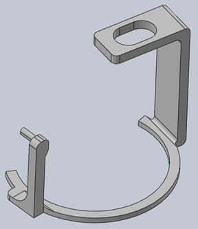

Businesscase Legionellapreventiesysteem
Naam: Jan-Willem Arendsen en Remco Martens, Datum: 15-01-2021

In dit artikel worden de kosten en de baten voor de drie markten, die onderzocht zijn in het marktonderzoek beschreven. De drie markten zijn naar voren gekomen door deskresearch en door bedrijven te interviewen. Eerst worden de jaarlijkse kosten van de drie markten beschreven. Vervolgens worden de fabricagekosten van het Legionellapreventiesysteem (LPS) beschreven. Vervolgens worden de baten beschreven. Hierin staat wat het bedrijf moet doen om een Legionellapreventiesysteem toe te passen en hoe groot de kans is dat een van de drie markten dit systeem werkelijk toe gaat passen. Heeft u interesse in het uitgebreide marktonderzoek, dan verwijs ik u naar het Rapport Legionellapreventiesysteem.
Jaarlijkse kosten Legionellapreventie
De jaarlijkse kosten van bedrijven op het gebied van legionellapreventie bestaan uit directe en indirecte kosten. Directe kosten zijn de kosten die direct aan legionellapreventie gerelateerd kunnen worden en die door externe organisaties uitgevoerd worden. De indirecte kosten zijn de kosten die het bedrijf zelf maakt op het gebied van legionellapreventie. De directe kosten zijn de kosten van de onafhankelijke bacteriologen, de licentiekosten en het controleren van de leiding op dode punten. Het controleren van de leiding op dode punten is een eenmalige act iviteit. Deze kosten zijn elk jaar hetzelfde en kunnen niet weggenomen worden door een mogelijk legionellapreventiesysteem, tenzij de overheid de maatregelen door het toepassen van zo’n systeem versoepeld, waardoor bijvoorbeeld minder vaak gecontroleerd hoeft te worden door een onafhankelijke bacterioloog. Daarnaast zijn er ook nog indirecte kosten. Met indirecte kosten worden de personeelsuren, het verbruikte water door doorspoelen en de verbruikte energie van het warme water tijdens het doorspoelen gebruikt. Water wordt namelijk niet uit zichzelf warm.
Recreatie
De directe kosten van recreatie. De licentiekosten zijn al snel een paar honderd euro per jaar. De onafhankelijke bacterioloog vraagt tussen de 50 en 75 euro per monster. Sommige kleine campings hebben vier meetpunten, terwijl grote bedrijven al snel 15 meetpunten hebben. Bij 15 meetpunten wordt al snel over € 1.000 gepraat.
De indirecte kosten van recreatie. De grotere recreatiebedrijven geven aan dat zij per week tussen de 4 en 8 werkuren bezig zijn om kranen door te spoelen. Dit is per jaar, snel rond de 300 uur. Middelgrote recreatiebedrijven zijn per maand ongeveer 12 werkuur bezig. Dat is op jaarbasis ongeveer 140 uur. Uitgaande dat het minimumloon bij een 36 uur werkweek € 10,60 is, is dit op jaarbasis bij de Middelgrote recreatiebedrijven rond de € 1.500 per jaar. Daarnaast wordt er onnodig warmwater door de kraan gespoeld. Hiervan zijn geen concrete cijfers, maar gemiddeld geven bedrijven aan dat men denkt hierdoor rond de € 2.000 per jaar door het putje te spoelen. Zie tabel 1 hieronder voor een schematische weergave.
Tuincentra
De directe kosten voor een tuincentra zijn de kosten voor de meting door een onafhankelijke bacterioloog. Per keer kost zo’n meting ongeveer € 500. Per jaar zijn er vier metingen, waardoor de directe kosten ongeveer € 2.000 per jaar zijn. In het geval van de tuincentra betekent dit ongeveer 70 werkuren per jaar dat er besteed wordt om leidingen door te spoelen. Hierin zitten niet de kosten van het doorgespoelde water en de energie die gebruikt is om het water te verwarmen. De loonkosten die verspild worden tijdens het doorspoelen van de leidingen zijn al snel € 1.000 per jaar.
Zorggroep
De directe kosten voor de zorggroep per gebouw zijn ongeveer € 2.300 per jaar. Per gebouw per jaar zijn de kosten voor de bacterioloog ongeveer € 2.000 per jaar. Vervolgens zijn er de kosten voor een risicoanalyse. Deze kosten zijn € 3.000 per gebouw. Deze risicoanalyse kan ongeveer 10 jaar mee, dus dat is ongeveer € 300 per jaar. Daarnaast moet de temperatuurmeter elk jaar geijkt worden, wat € 7,50 per meting is. Dit maakt een totaal van ongeveer € 2.300 per jaar.
De indirecte kosten voor de zorggroep zijn ongeveer € 2.500 per jaar. Deze kosten bestaan uit het de loonkosten van het monitoren en het doorspoelen. De kosten van het water zijn niet meegenomen. Wel wordt er ongeveer 950 liter water per gebouw weggespoeld per jaar. De tijd voor het monitoren van 42 gebouwen is ongeveer 25 procent van iemands voltijd werk. Dit is ongeveer € 285 per gebouw. Daarnaast wordt er per jaar ongeveer 74 werkuren besteed aan het doorspoelen van de leidingen per gebouw. Het uurloon is ongeveer € 30 per uur, wat een totaal € 2.250 per jaar is. Het weg te spoelen water per jaar was vroeger 10 minuten per leiding, maal 10 liter per minuut, dus 100 liter per keer. Tegenwoordig spoelen zij 1 minuut en spoelen de wc één keer door, wat totaal 18 liter per keer is. Dit wordt één keer per week gedaan. Dit is per gebouw 950 liter per jaar. De indirecte kosten, zonder de waterkosten en temperatuurkosten voor het water, zijn ongeveer € 2.500 per jaar. Zie in de onderstaande tabel 1 de directe en indirecte kosten van de verschillende branches.
| Branche | Directe kosten | Indirecte kosten | Totale jaarlijkse kosten |
|---|---|---|---|
| Recreatie | +- € 1.300 | +- € 3.500 | +- € 4.800 |
| Tuincentra | +- € 2.000 | +- € 1.000 | +- € 3.000 |
| Zorggroep per gebouw | +- € 2.300 | +- € 2.500 | +- € 4.800 |
Kosten Legionellapreventiesysteem
De prijs van het legionellapreventiesysteem (LPS) bestaat uit de kosten van het materiaal. De materiaalkosten van het LPS bestaan uit het volgende:
- Watermeter;
- Temperatuursensor;
- Minicomputer;
- Ge3D-printte onderdelen;
- Bedrading;
- Breadboard.
Baten
Het systeem kan eenvoudig gemonteerd worden op de huidige installatie. In elke installatie zit een watermeter. Het grootste verschil is dat er van een normale watermeter een ‘’slimme’’ watermeter gemaakt wordt. Dit wordt gedaan door sensoren op de watermeter te monteren. Het systeem hoeft dus niet aangepast te worden, want alleen de watermeter krijgt een update. De kosten voor één LPS voor een watermeter zijn ongeveer € 60. Het grootste verschil tussen de verschillende bedrijven is dat zij waarschijnlijk verschillende watermeters gebruiken. Vandaar dat er per watermeter een beugel ontworpen moet worden. In de afbeelding hieronder kan een voorbeeld van een ontworpen beugel voor een watermeter gezien worden. De gefabriceerde prijs per beugel zal niet veel verschillen, omdat deze qua inhoud ongeveer dezelfde grootte hebben. Het systeem aanpassen is dus een relatief kleine moeite.

Wanneer eenmaal de watermeter is aangepast voor een Legionellapreventiesysteem (LPS), kan het analoge logboek worden aangepast naar een digitaal logboek. Dit houdt in dat er niet meer standaard gespoeld hoeft te worden, maar dat het systeem een melding geeft welke leidingen er doorgespoeld moeten worden. Ook wordt het logboek digitaal gemaakt en worden de waardes gelijk op het logboek genoteerd. Door deze maatregelen worden er veel werkuren bespaard. Ook wordt er veel water en energie bespaard, omdat er niet onnodig warm water doorgespoeld moet worden. De kosten die dit per markt oplevert heeft u kunnen lezen in de jaarlijkse kosten legionellapreventie. Verwacht wordt dat het LPS de indirecte kosten zal verlagen met 25% dit is een schatting en dus geen garantie.
Verwacht wordt dat een gemiddeld recreatiebedrijf of zorggroep interesse heeft in een Legionellapreventiesysteem, omdat zij relatief veel werk en kosten hebben om aan het legionellabeheersplan te voldoen. Ook is het bij deze bedrijven zo dat als zij veel legionella in de leiding hebben, omdat dit uit de waardes van de onafhankelijke bacterioloog naar voren komt. Dit geldt vooral voor de grotere campings. Bij de tuincentra wordt verwacht dat zij dit nog niet als dusdanig groot probleem zien om zo’n systeem te gebruiken, omdat beweerd wordt dat dit geen groot probleem is.
Door het gebruik van een LPS blijven er ook kosten voor legionellapreventie aanwezig, omdat de overheid metingen van een onafhankelijke bacterioloog eist en de risicoanalyse moet om een aantal jaar geüpdatet worden. Wij denken dat ondanks dat de ‘’directe kosten’’ voor legionellapreventie met ons systeem niet weggenomen worden, dat er nog steeds vraag is voor een Legionellapreventiesysteem bij de recreatie en de zorginstellingen, omdat zij dagelijks bezig zijn met het (onnodig) doorspoelen van waterleidingen. Door dit systeem zou hier veel tijd mee bespaard kunnen worden, omdat hierdoor het logboek digitaal gemaakt wordt en omdat dit systeem aangeeft wanneer er gespoeld moet worden, kan een groot gedeelte van de indirecte jaarlijkse kosten voor legionellapreventie weggenomen worden. Omdat het updaten van een watermeter ongeveer € 60 gaat kosten, wordt verwacht dat dit aantrekkelijk is voor de twee bovenstaande markten, waardoor de drempel om voor dit systeem te kiezen laag is.
In onderstaande tabel is een verwachte kostenbaten-analyse weergegeven voor een recreatiebedrijf met 100 accommodaties. Elke accommodatie krijgt een LPS geïnstalleerd. Verder wordt verwacht dat 25% van de indirecte kosten bespaard zullen worden met het LPS. In de tabel zijn de kosten voor 100 stuks van het LPS weergegeven, deze zijn € 750. De baten voor een jaar zijn 25% van de totale indirecte kosten, namelijk € 875. Dit laat zien dat naar verwachting het recreatiebedrijf al € 125 bespaart in het eerste jaar van aankoop.
Kosten-batenanalyse voor een recreatiebedrijf
| Kosten | Baten | ||
|---|---|---|---|
| LPS 100 stuks | € 600 | Waterbesparing | € 500 |
| Winst 25% | € 150 | Loonkosten | € 375 |
| Totaal | € 750 | Totaal | € 875 |